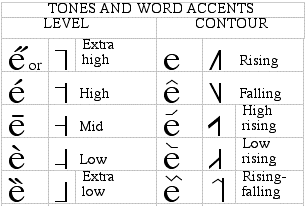

Deciding on the transcription is made more complicated by the fact that the IPA Chart provides terms that are not easily applied to this data. It also recognizes two systems for transcribing tones, as shown by the excerpt from the IPA chart below.
Deciding on the transcription is made more complicated by the fact that the IPA Chart provides terms that are not easily applied to this data. It also recognizes two systems for transcribing tones, as shown by the excerpt from the IPA chart below.

Using terms such as those in these columns, it might be said that the four Chinese tones could be described as being (for this speaker, on this occasion): (1) high, (2) mid high (or high rising), mid extra-low mid, and extra high falling. Other similar descriptions would also be possible. It is important to realize that there is no one correct answer to this problem. A transcription is a description in terms of symbols for categories. The way to produce a more precise account of the phonetic realization of tone is to present pitch (and intensity) curves.